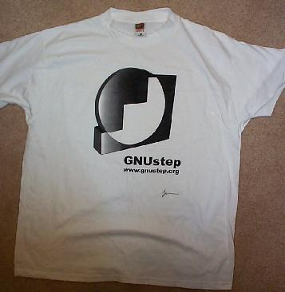

|
|
Financed by the sale of T-Shirts (see below), we have about $400 available for someone who would like to contribute. I know that's not a lot of money, but it could be an incentive for some intrepid programmer who's always thought about contributing more to GNUstep.
If you are interested, please submit a proposal for what you would like to do to improve GNUstep. This could involve something on the current task list, or perhaps it could involve something you think is critical to getting GNUstep more widely accepted (marketing, a new application, etc). The project should last less than six months.
All proposals will be judged by our crack team of GNUstep developers for the one with the best merit. Send them to Adam Fedor
GNUstep T-Shirts for Sale! This is a Limited Time Offer. I only have a small number of shirts. All shirts are XL (Extra-Large) and feature the GNUstep logo on the front as well as the words "GNUstep" and "www.gnustep.org". Design courtesy Lucas Wagner/SpindleTop.
All proceeds will go towards paying some poor programmer to improve the lot of GNUstep (details above).
Shirts are $15 U.S. plus shipping. Shipping prices:
Alternate shipping on request. All payment must be in U.S. Dollars, by Check, Money Order, or online payments (through www.paypal.com).
Send an email to Adam Fedor and I'll give you the details.
